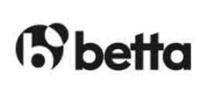

Trade Mark Journal No.2025/013 28 March 2025
UK00004169674 6 March 2025 (9,38,41)
Mark 1

Mark 2
- Class 9
- Gambling software; Betting software; Sports betting applications; Casino management software; Gaming software that generates or displays wager outcomes of gaming machines; Gaming software; Computer software for the administration of on-line games and gaming; Interactive casino games provided through a computer or mobile platform; Computer hardware for games and gaming; Downloadable information relating to games and gaming; Electronic publications, downloadable, relating to games and gaming.
- Class 38
- Providing access to gambling and gaming websites on the internet.
- Class 41
- Gambling; Casino, gaming and gambling services; Gambling services; Providing casino facilities [gambling]; Casinos; Online gambling services; On-line gambling services; Gambling information services; Providing of casino and gaming facilities; Casino services; Poker game services; Online casino services; Casino facilities; On-line casino services; Rental of casino games; Online sports betting services; Wagering services; Betting services; Sports betting services; Administration [organisation] of poker games; On-line gaming services; Online gaming services; Horses (Betting on -); Gaming services; Providing casino facilities; Betting exchange services; Bingo services; Providing online entertainment in the nature of game tournaments; Services for the operation of computerised bingo; Gaming services for entertainment purposes; On-line entertainment; Internet games (non-downloadable); Provision of online computer games.
Grace Media Limited